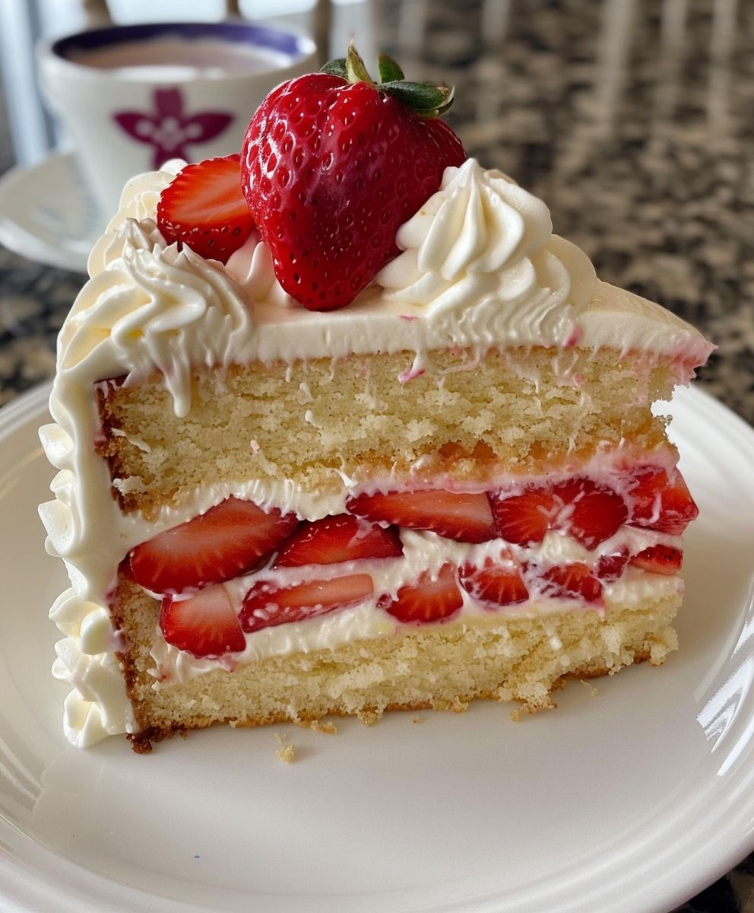

1. Beschrijving
De strawberry short cake is een dessert met verse aardbeien en een heerlijke slagroom vulling. Het gebak is opgebouwd uit meerdere lagen cake of kruimelige koek, aardbeien en slagroom. Het is helemaal niet lastig om dit nagerecht te maken en de shortcake is echt een heerlijk lekkernij voor in de zomer.

2. Ingrediënten
- 380 gram patentbloem
- 12 gram bakpoeder
- Snufje zout
- 60 milliliter zonnebloemolie
- 350 milliliter slagroom
- 300 gram Brand New Cake Crème Chantilly-mix
overige benodigdheden
- 190 gram ongezouten roomboter, op kamertemperatuur
- 4 eieren, maat M
- 120 gram zure room
- 230 milliliter volle melk
- 500 gram aardbeien
3. Instructies
- Meng met een garde de bloem, bakpoeder en het snufje zout door elkaar heen.
- Mix daarna met een mixer voor 5 minuten de melk, zonnebloemolie, zure room, ongezouten roomboter en eieren erdoorheen.
- Verwarm de oven voor op 170 graden (heteluchtoven).
- Bekleed de bakvorm van met bakpapier.
- Giet het beslag in de bakvorm
- Bak de cake in 50 minuten gaar. Tip! Prik met een satéprikker in de cake om te kijken of die goed gaar is.
- Haal de cake uit de oven en laat deze 1 uur koelen.
- Snijd daarna met een taartzaag de afgekoelde cake in 3 gelijke plakken.
- Laat de plakken wederom nog goed koelen. Tip! Als je dit niet doet, smelt de vulling.
- Klop de onopgeklopte slagroom door de Crème Chantilly-mix heen.
- Klop de crème stijf.
- Doe de crème in een spuitzak.
- Snijd de aardbeien in stukjes.
- Spuit op 1 laag wat crème chantily.
- Doe hier ongeveer eenderde van de aardbeien overheen.
- Leg de tweede laag cake hier bovenop.
- Spuit ook hier weer wat crème chantilly op.
- Doe daar weer een deel aardbeien bovenop
- Leg de laatste laag cake hier bovenop.
- Spuit op deze laag mooie toefjes met de crème.
- Garneer deze laag met de aardbeien die nog over zijn.